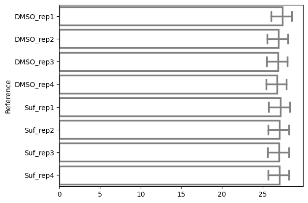
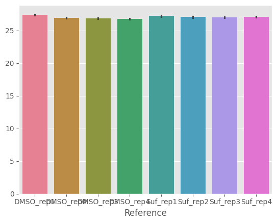

Seaborn#
A statistical data visualization library based on Matplotlib.
Provides a high-level interface for drawing attractive statistical graphics.
Use matplotlib objects if you need to modify aspects of the plot.
import pathlib
import matplotlib.pyplot as plt
import pandas as pd
import seaborn as sns
Proteomics data example#
dir_data = pathlib.Path("data")
df = pd.read_csv(dir_data / "proteins" / "proteins.csv", index_col=0).T
df
| Reference | DMSO_rep1 | DMSO_rep2 | DMSO_rep3 | DMSO_rep4 | Suf_rep1 | Suf_rep2 | Suf_rep3 | Suf_rep4 |
|---|---|---|---|---|---|---|---|---|
| A5A613 | 27.180209 | NaN | NaN | NaN | NaN | NaN | NaN | NaN |
| P00350 | 28.151576 | 27.926204 | 27.653250 | 27.151643 | 27.441837 | 27.031610 | 27.814631 | 27.587217 |
| P00363 | 30.247131 | 30.261665 | 29.969625 | 29.470663 | 30.004725 | 30.085997 | 29.904057 | 29.575194 |
| P00370 | 27.459171 | 26.873349 | 26.599971 | 26.438623 | 27.399691 | 27.189188 | 27.139030 | 27.223715 |
| P00393 | 26.823758 | 26.756617 | 25.442346 | 25.798954 | 26.671118 | 26.885970 | 26.711192 | 26.320866 |
| ... | ... | ... | ... | ... | ... | ... | ... | ... |
| Q57261 | 28.410859 | 27.940694 | 27.070328 | 26.679649 | 27.995432 | 27.055135 | 27.313219 | 26.643479 |
| Q59385-2 | 23.554913 | 25.240354 | NaN | 22.524292 | NaN | NaN | NaN | NaN |
| Q59385 | 27.640279 | 27.243650 | 27.525020 | 27.403753 | 27.498873 | 27.666957 | 27.708407 | 27.847610 |
| Q7DFV3 | 28.512794 | 27.620780 | 27.678892 | 27.255831 | 28.090220 | 27.525537 | 27.814369 | 27.605449 |
| Q93K97 | 27.223010 | 25.291110 | 24.358694 | 25.767196 | 25.956190 | 25.230565 | 26.103059 | 26.177716 |
2269 rows × 8 columns
Horizontal Bar Plot#
Using the
orientparameter to switch to horizontal orientation.calculates the mean and standard deviation of the mean automatically
ax = sns.barplot(
data=df,
orient="h",
errorbar=("pi", 50),
capsize=0.4,
err_kws={"color": ".5", "linewidth": 2.5},
linewidth=2.5,
edgecolor=".5",
facecolor=(0, 0, 0, 0),
)

Customizing the Plot#
You can customize the plot further using Matplotlib functions.
_ = ax.set_xticklabels(
ax.get_xticklabels(),
rotation=45,
horizontalalignment="right",
)
ax.get_figure().tight_layout()
/tmp/ipykernel_2364/3272659636.py:1: UserWarning: set_ticklabels() should only be used with a fixed number of ticks, i.e. after set_ticks() or using a FixedLocator.
_ = ax.set_xticklabels(
Style the plot as in ggplot2#
with plt.style.context("ggplot"):
ax = sns.barplot(data=df)

The end.